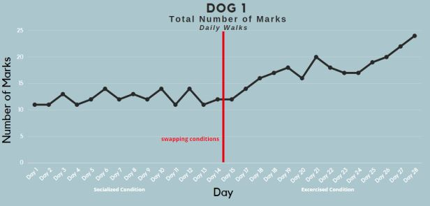
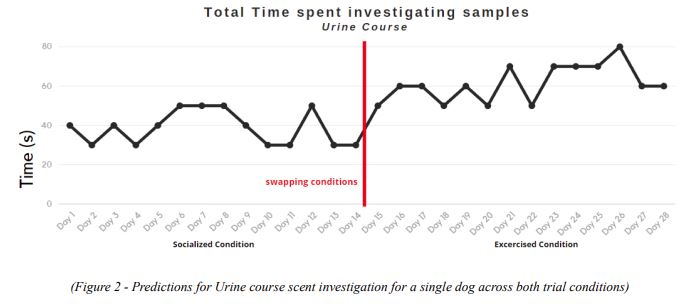

Scent Marking Study Proposal
Research —
Animal Cognition
Writing
Experimental Research
COGS 142 Spring '22
Course Info
This course teaches the study of animal communication, the key terminology, the remarkable communicative systems that several animal species possess, and the key similarities and differences between human and non-human animals’ communications. The final project involves designing a study on a topic related to animal communication.
Introduction
Current research on dog marking behaviors has shown it is a dense medium for social interaction. Dogs are able to detect a wide array of each other’s physical features and have intricate marking and countermarking behaviors that change over time. Thus far, research has focused on how marking behaviors change with physical differences like breed, sex, age, and castration, as well as the chemical interactions beneath it all. Given how social this pathway for communication truly is, there is still more to be discovered about how it relates to face to face interactions, and whether these two pathways clash. In this 4 week longitudinal study, researchers will analyze how the amount of socialization impacts a dog’s interest in marking, as well as its interest in other dog’s marks. We hope to expand current research by understanding how these two areas of dog socialization interact, and we hope to give answers to pet parents who struggle to control marking behaviors about whether more, or less socialization can help.
Background
Scent marking is a type of olfactory communication which has been observed in several
species in the animal kingdom. Scent marking involves animals leaving behind their scent on
features in their environment to be detected by others at a later point in time. It is mainly used as
a way of marking territory ownership, and it allows animals to detect each other in their absence
(Gosling, L. M.,1982). Generally, olfactory communication allows species to identify
characteristics about each other without needing to engage, which can work to avoid
confrontation while allowing animals to discover features about each other. Domestic dogs are
the most common example of this in our daily lives and have proven to be a flexible and
convenient way for researchers to learn about scent marking.
Researchers have observed scent marking behaviors in dogs of both sexes. Most studies
have focused on how marking behaviors change based on mating and physical traits like sex,
age, and whether they have been neutered/spayed (gondectamy). Early research established that
males have higher rates of marking behaviors, and are more likely to direct their urine on
specific targets (Anisco, 1973). Because of these findings, marking behaviors were more
strongly associated with males dogs until further studies established that females also direct their
urine and engage in scent marking behaviors (Wirant and McGuire, 2003). Researchers have also
established that scent marking is an avenue for marking territory in both sexes, with males
marking territory boundaries and females marking areas close to nests with their puppies (Pal,
2003). This body of research indicates scent marking is important for both males and females.
An area of interest has been how dog marking behaviors change with age. In a recent
study, researchers found that older dogs urinate more frequently, and spend more time targeting
their urine when they mark (McGuire, 2016). This almost indicates that it is a learned behavior
and that dogs get better at it over time.
Perhaps the most abundant area of research has been the effects of castration on marking
behaviors. In a recent study, it was found castration was strongly correlated with decreased
urination frequency in male dogs, but that it made no difference in female dogs (McGuire, 2018).
This research confirms this behavior may be more prominent in male dogs, and that it is likely
important to mating behaviors. A popular way of researching this is by testing how dogs react to
the simulated marks of other dogs. By having dogs investigate different samples, and by
measuring the amount of time that a dog spends investigating a particular scent, researchers have
learned that dogs can detect a whole array of things, from sex, age, or even whether they are
group mates. A study with beagles found that dogs can detect the sex, and heat cycle status of
another dog (Dunbar, 1978). Research has also shown that dogs can detect whether the dog has
been castrated. A study found that non castrated males and females elicited longer investigation
than did urine from castrated sources (Lizberg and Snowdon, 2009).
Given what researchers have learned, interest has been directed towards the chemical
composition of dog urine to understand what underlays these behaviors. A series of studies have
delved into the chemical relationships involved in marking behaviors. Researchers testing the
association of creatine and cortisol with dog urination frequency during socialization found that
there is a positive association between the two (Alberghina et al, 2019). Instead of analyzing
urine compositions, other researchers have tried to directly alter urination behaviors using
various drugs. In a study, researchers tested the effects of L-deprenyl, and found a decrease in
directed sniffing, and a less frequent urination in males (Head and Milgram, 1992).
Other studies have combined several of these areas of research and have looked at
countermarking behaviors. Researchers found that males only overmarked intact males and not
castrated ones, and had a preference to overmark non castrated females (Lizberg and Snowdon,
2010). Research thus far shows marking behaviors are a dense social medium, and that it is
important for dogs of all sexes, breeds, and ages.
Rationale
The current body of research teaches us a lot about how marking behaviors work, about
the acute interactions between age, sex, gondectamny, and about how these interactions take
place at the chemical level. Although this helps us understand marking behaviors, they do not do
much to explain the relationship between marking and the social interactions dogs may have
outside of times they may mark. As has been established, dogs can detect an incredible number
of characteristics about other dogs, and scent marking is a much more dense pathway for
information than we once thought. It's possible to think of this as a type of asynchronous
communication, and it would be interesting to know how this pathway clashes with normal
pathways of in-person interaction. The goal of this study is to understand if marking behaviors
change based on a dog's socialization outside of times it may mark. This study seeks to answer
whether dogs are more, or less inclined to engage in their habituistic marking behaviors based on
outside levels of socialization. Thus far, it has not been made clear: It is possible that more
socialization leads to more intensive marking behaviors due to an increased sense of competition,
but it could also decrease interest in marking, since dogs may be tired of socializing with other
dogs.
The previous body of research proves that dog marking is incredibly social. Dogs can
detect different features about each other, and have very developed and intricate behaviors for
marking and countermarking. Researchers have also found that dogs can detect urine of familiar
versus unfamiliar dogs. In a study, “Male Dogs spent nearly twice as much time investigating
urine from other males in the colony and over four times longer investigating urine from a
stranger as they did investigating their own urine” (Dunbar and Carmichael, 1981). Along with
this, studies have shown that dogs are able to detect their conspecifics versus unfamiliar dogs.
This indicates that there may be a decreased need for dogs to investigate the urine of dogs they
socialize with. This indicates that socialization might actually decrease marking behaviors, since
social dogs may feel less of a need to mark.
Beyond expanding our understanding of socialization and marking behaviors, this area of
research is particularly important for many dog parents who are challenged to curb or manage
the behavior. As researchers have established, marking is a natural behavior, and it is not a
problem the majority of the time. Sometimes however, dogs will mark indoors, or on things they
should not be marking on. Curbing and reducing the marking behaviors is important to dog
owners, and a lot of content exists to advise dog owners on what to do, ranging from getting your
dog neutered to using certain enzymatic cleaners. This study could help these pet parents by
looking for any connections between socialization and reduction of marking behaviors. If your
dog marks when it shouldn’t, maybe giving it more, or less socialization could help.
Methods
To conduct this longitudinal study, the research team will work with local animal shelters
to select 10 dogs whose adoptions will be delayed for the study and whose social schedules can
be determined entirely by the research team. To elaborate, visits by potential adopters will
continue normally, but the pickup date, or date of ownership, will not be until the study ends.
Five of the dogs will be males and five of the dogs will be females. Previous research has shown
that castration tends to reduce marking behaviors, so for the purposes of collecting more data,
none of the selected dogs will be castrated. Since this is a repeated measures design, and dogs of
all ages and breeds engage in marking behaviors, researchers will be selecting an even spread of
these based on availability. Once dogs are selected based on these factors, the last part of the
selection process will involve researchers confirming that each dog does, in fact, engage in
marking behaviors by taking them on a walk.
Working with local animal shelters provides several advantages. First, most shelters
appreciate the help. Taking the time to exercise and socialize rescue dogs can be arduous and it's
nice to lift a weight off the shoulders of volunteers. From personal experience, most shelter dogs
are housed in separate enclosures for health and safety reasons. This is done mostly to avoid
fights and to stop the transmission of any potential illnesses or diseases, since the dog’s histories
are not usually known. This benefits our study by reducing the potential biases that come with
dogs who have already been adopted, since they tend to live in much less consistent
environments. Lastly, although this is from personal experience and it likely varies, shelter dogs
usually spend about a month at the shelter or pound before they are adopted. This study is
designed to fit in that timeframe to avoid too much disruption to the shelter’s adoption process.
To ease any burden, the research team will also make a financial contribution to the shelter(s) to
pay all the expenses, for each dog, during their entire shelter stay.
The 10 selected dogs will engage in an experiment with repeated measures design. This is
advantageous because it requires a small sample, putting less load on shelters and logistics. It
also helps to eliminate the many, many confounding factors that impact dog marking behaviors
mentioned previously. This experiment will consist of two trial conditions, a “socialized”
condition and a “exercise” condition. In the “socialized” condition, dogs will engage in one hour
of social interaction at a local dog park preselected for this experiment. During this time, the
experimenter will record all dog marking behaviors, and record the types, and numbers of social
interactions the dog has. The second condition is the “exercise condition” where dogs engage in
an hour of solo exercise and playtime with an experimenter in a large, open area, but without the
presence of other dogs. This allows the dogs to get an equal amount of physical exercise in both
conditions, with only the level of social interaction being different. Put simply, every dog will get
either 1 hour of playtime with other dogs, or 1 hour of playtime with the experimenter, each day.
The 10 dogs will be split into two groups, A, and B for counterbalancing. Group A will be
exposed to the ‘socialized’ condition for two weeks, then be exposed to the “exercise” condition
for two weeks. Group B dogs will experience the conditions in the reverse order.
Along with either the hour of social time, or the hour of exercise, researchers will take
each dog for a 30 minute walk along a pre chosen path for the dog which remains the same
across both conditions. The experimenter will video record the dog walk, and note the number of
times the dog marks. This is purely to understand whether the dogs mark at higher rates.
At a chosen point in the day for each dog, a researcher will take the dog through a urine
course mimicking the one used by Lisberg and Snowdon in their 2009 study. Working with the
shelter, researchers will collect 25 urine samples from various dogs. A urine course will be
created each day in a consistent place for each dog. The urine course contains 6 wooden stakes
placed 10 feet apart in a line, aligned perpendicular to the wind. Three of the stakes have urine
samples from other dogs, and three of the stakes have tap water as a control. Each day, the stakes
are randomized such that the control, and urine samples were in each ‘stake’ position at least
once during the study. The researcher is to guide the leased dog through the urine course, and
video tapes the process. Just like in the Lisberg and Snowdon study, researchers are to stop
within 3 feet of each stake, and move on after 30 seconds unless the dog was still investigating.
The researchers are not to engage in any communication and are to refrain from eye contact, and
should do their best to maintain a loose leash.
As with any study, there are certain limitations. This study was designed to fit into a
month, with each trial condition lasting two weeks. It must be stated that the trial conditions
could have much more significant effects if the study were prolonged. This study can be seen as
a pilot study, and further ones could be extended. Additionally, the results may be affected by the
amount of time that passes between the “socialized” and “exercise” conditions, up until the urine
course and dog walk are performed. It is possible that the longer you wait after socialization,
even if a matter of hours, the more time a dog will spend investigating other urines. Another
experiment would have to be run to figure this out. Lastly, it must be stated that for the 30 minute
daily walks, there is a lot of variability in the smells and environmental cues that a dog may
encounter, and researchers will not be able to tell if a dog is seeking out the smells of other dogs,
or some kind of food, or prey. Accounting for these is practically very difficult, and could be the
topic of a future study.
Predictions
I predict that dogs who go to the dog park will be less likely to engage in marking behaviors during the walks and will spend less time investigating the samples of other dog’s urines in the urine course. An important point to note is that dog marking is natural, and has a territorial element which this study does not eliminate. Therefore, I definitely do not expect marking behaviors to drop to zero, instead, I expect a decrease of significant proportions. Fundamentally, I think the processes of socialization and marking behaviors are related. Previous studies have shown that dogs who socialize spend less time smelling familiar urines. I think dogs use scent marking as a second avenue for socialization, and that they'll be less interested in using this avenue of communication when they have more time to pursue primary avenues for socializing with other dogs.
My predictions about the total number of marks are illustrated in figure 1, which shows predicted results for a group A dog. Since I expect socialization to decrease dog marking behaviors, I expect to see an increase once socialization stops, as I expect the dog will resort to scent marking to reach its conspecifics. For this specific group A subject, Dog 1, I expect to see an increase in marking behaviors once socialization stops. It must be noted, the significance of the increase may be a lot less and may change substantially from dog to dog.
Figure 2 shows a graph of predicted results for the urine course. I expect that over time, a lack of social interaction will push this particular dog to be more interested in marking behaviors as an outlet for socialization, and the dog therefore will spend more time investigating samples in the urine course. I also predict that the order of the trials may have an effect on the results. The dogs that spend two weeks socializing, then two weeks without social interaction may show a more dramatic tendency to mark, or investigate other marks than vice versa.
Works Cited
- Alberghina, Daniela, et al. “Marking Frequency during Intraspecific Socialization Sessions Is Related to Urinary Cortisol Levels in Shelter Dogs.” Pet Behaviour Science, no. 7, 2019, pp. 1–6., https://doi.org/10.21071/pbs.v0i7.11798.
- Anisko, Joseph J., and Randall H. Sprague. “Elimination Patterns in the Laboratory Beagle.” Behaviour, vol. 47, no. 3-4, 1973, pp. 257–267., https://doi.org/10.1163/156853973x00102.
- Dunbar, Ian F. “Olfactory Preferences in Dogs: The Response of Male and Female Beagles to Conspecific Odors.” Behavioral Biology, vol. 20, no. 4, 1977, pp. 471–481., https://doi.org/10.1016/s0091-6773(77)91079-3
- Dunbar, Ian, and Marie Carmichael. “The Response of Male Dogs to Urine from Other Males.” Behavioral and Neural Biology, vol. 31, no. 4, 1981, pp. 465–470., https://doi.org/10.1016/s0163-1047(81)91546-6.
- Gosling, L. M. (1982). A reassessment of the function of scent marking in territories. Zeitschrift für Tierpsychologie, 60, 89–118. Retrieved from “Scent-Marking.” Encyclopedia of Animal Cognition and Behavior, Springer, 2022.
- Head, E., and N.W. Milgram. “Changes in Spontaneous Behavior in the Dog Following Oral Administration of L-Deprenyl.” Pharmacology Biochemistry and Behavior, vol. 43, no. 3, 1992, pp. 749–757., https://doi.org/10.1016/0091-3057(92)90404-4.
- Lisberg, Anneke E., and Charles T. Snowdon. “The Effects of Sex, Gonadectomy and Status on Investigation Patterns of Unfamiliar Conspecific Urine in Domestic Dogs, Canis Familiaris.” Animal Behaviour, vol. 77, no. 5, 2009, pp. 1147–1154., https://doi.org/10.1016/j.anbehav.2008.12.033
- McGuire, Betty. “Effects of Gonadectomy on Scent-Marking Behavior of Shelter Dogs.” Journal of Veterinary Behavior, vol. 30, 2019, pp. 16–24., https://doi.org/10.1016/j.jveb.2018.11.002.
- McGuire, Betty. “Scent Marking in Shelter Dogs: Effects of Sex and Age.” Applied Animal Behaviour Science, vol. 182, 2016, pp. 15–22., https://doi.org/10.1016/j.applanim.2016.06.001.
- Pal, S.K. “Urine Marking by Free-Ranging Dogs (Canis Familiaris) in Relation to Sex, Season, Place and Posture.” Applied Animal Behaviour Science, vol. 80, no. 1, 2003, pp. 45–59., https://doi.org/10.1016/s0168-1591(02)00178-8.
- Wirant, Sharon Cudd, and Betty McGuire. “Urinary Behavior of Female Domestic Dogs (Canis Familiaris): Influence of Reproductive Status, Location, and Age.” Applied Animal Behaviour Science, vol. 85, no. 3-4, 2004, pp. 335–348., https://doi.org/10.1016/j.applanim.2003.09.012.